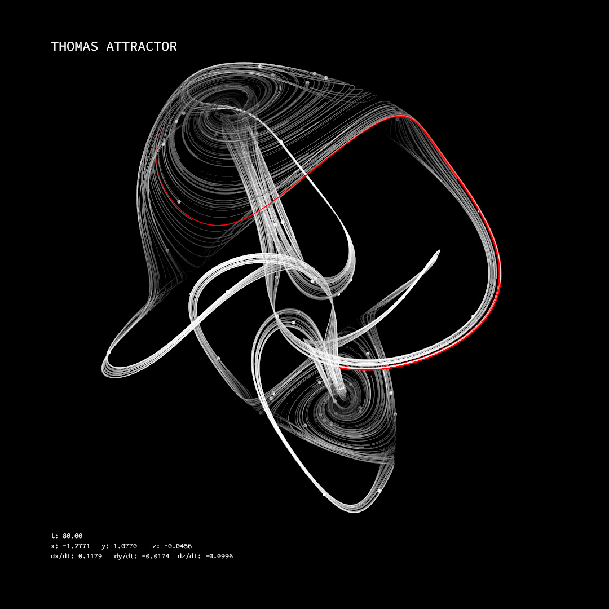

Strange Attractor
Video, 40", 2016
Strange Attractor is a visualization and sonification of strange attractors. All particles start from the same initial position with a small random amount of perturbation, generating very subtle differences in the initial values. The animation process simulates the phenomenon of the system's sensitivity to initial variables. It can be observed that at the beginning, the paths are basically the same, but then they start to diverge, showing sensitivity to initial conditions. Each particle is a sound source, and the sound properties are modulated based on position and velocity.

